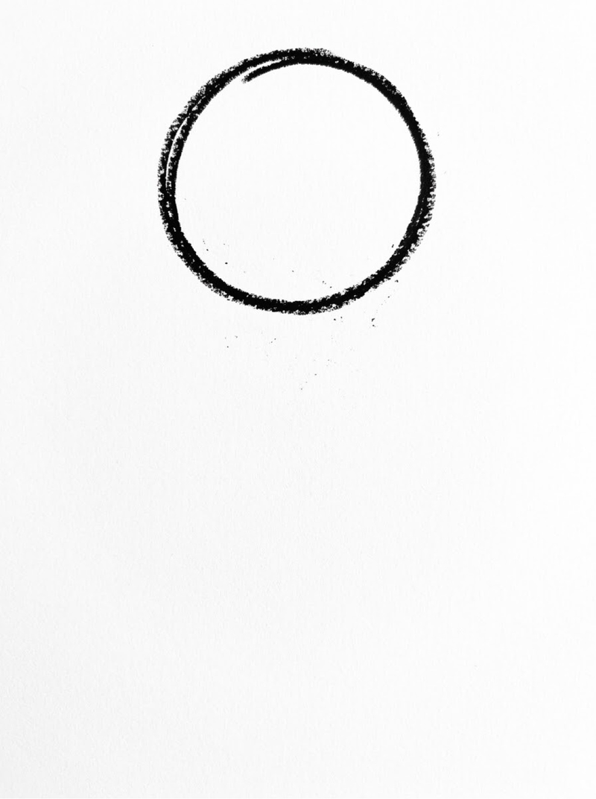
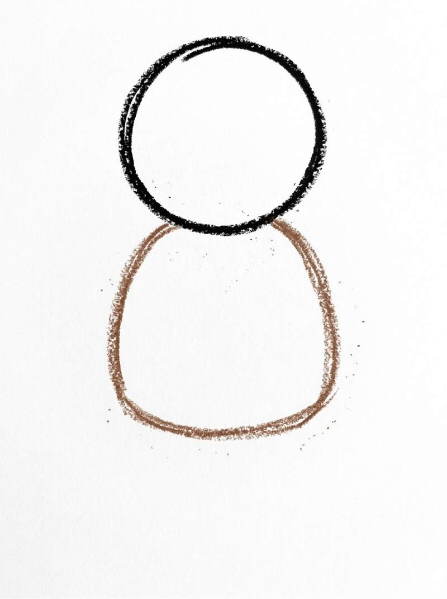
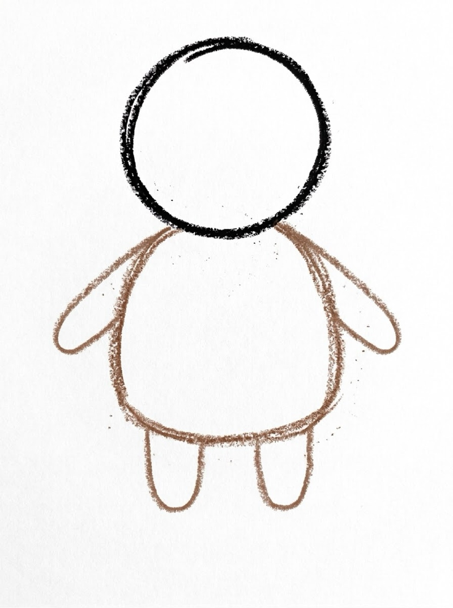
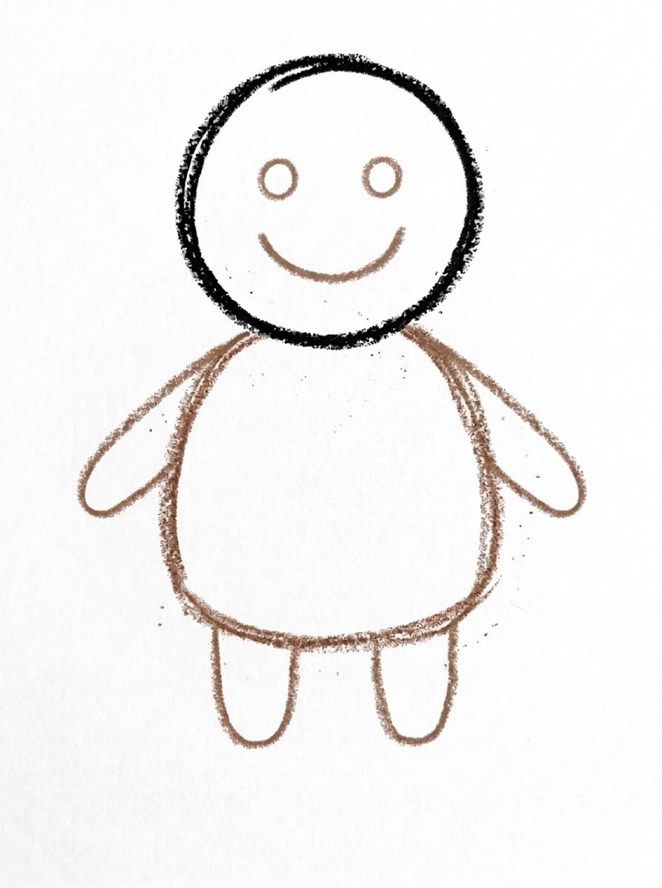
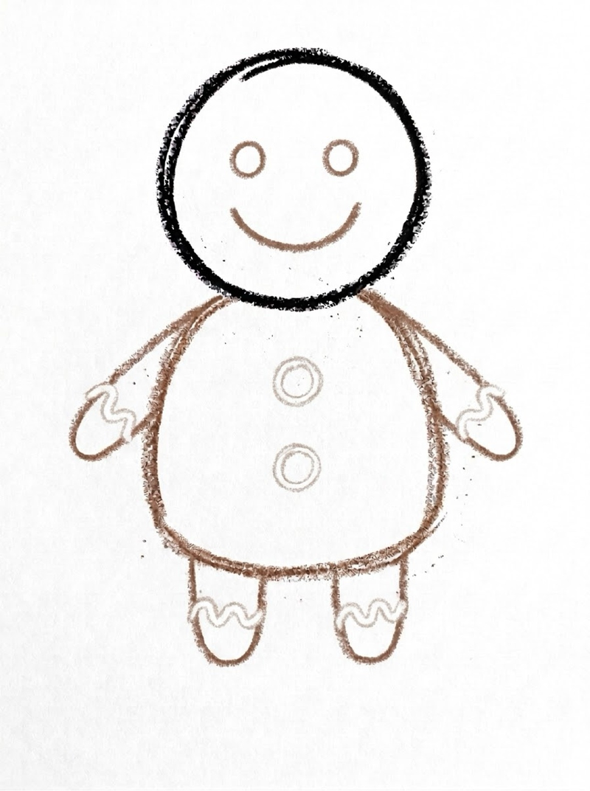
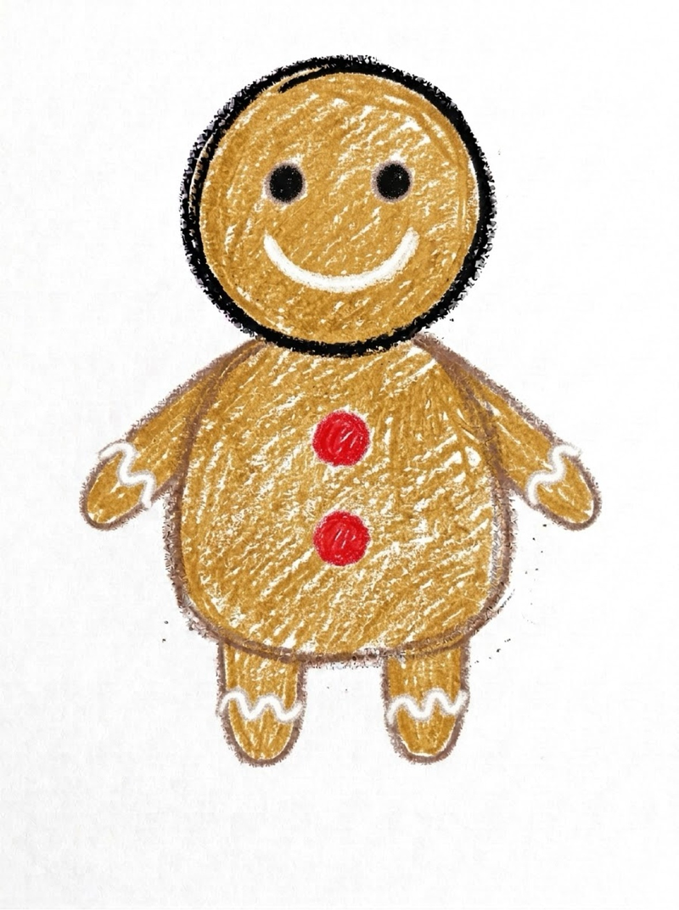

Gingerbread Man Drawing for Kids How to Draw a Gingerbread Man in 6 Easy Steps
Quick Answer
This free step-by-step tutorial shows kids how to draw a gingerbread man in six easy steps: a round head, a cookie body, arms and legs, a smiling face, and icing buttons. Download the printable PDF, grab crayons, and follow along together. Made for ages 3 and up — no signup needed, just print and draw.
At a Glance
- Subject: How to draw a gingerbread man
- Ages: 3+
- Steps: 6 steps
- Time: ~20 min
- Difficulty: Easy
- Supplies: Paper, crayons
The gingerbread man is December's tastiest drawing — and the icing step is every kid's favorite because white squiggles feel like real decorating. Built from a circle and rounded shapes, it's forgiving for wobbly lines. Fair warning: your kid will ask to bake real ones after.
✏️ How to Draw a Gingerbread Man: Step by Step
One step per box — draw each new part in a different color so kids can see exactly what changed.
Step 1: The Head

Draw a circle near the top of your paper. This round shape becomes your gingerbread man's head.
Step 2: The Body

Draw a rounded body under the head — like a plump gumdrop or a rounded rectangle. Let it touch the head so they're connected.
Step 3: The Arms and Legs

Add two arms sticking out to the sides and two short legs at the bottom. Simple rounded lines — like a happy star shape.
Step 4: The Face

On the head circle, add two dot eyes and a big smile. Gingerbread men are always happy.
Step 5: The Icing

Add icing details: two buttons down the body, squiggly icing lines on the arms and legs, and a wavy smile line. White crayon looks just like real icing.
Step 6: Color It In

Color your gingerbread man! Golden brown cookie, white icing details, red buttons. He looks good enough to eat.
📊 Gingerbread Man Drawing by Age
Every age can join in — just adjust the job.
| Age | What they can do | Tip |
|---|---|---|
| 3–4 | Trace the head circle on the printable | Draw the gumdrop body for them — plump curves are tricky |
| 4–5 | Follow all 6 steps with a little help | The icing squiggles are great fine-motor practice |
| 6+ | Draw solo and add their own details | Challenge: draw a gingerbread man melting (droopy!) |
🖨️ Download Your Free Gingerbread Man Drawing Printable
The printable lays out all 6 steps one per box, big enough for little hands — kids draw right alongside each step.
⬇️ Open Free Printable 🖨️ Print🎁 Free printable for ages 3+
🍪 Gingerbread Family Challenge
Draw three gingerbread people side by side — a big one, a medium one, and a tiny one. Give each different icing: buttons on one, a bow tie on another, zigzag hair on the third. Comparing sizes builds proportional thinking, and the different decorations make each cookie feel like a character.
What You'll Need to Draw a Gingerbread Man
Grab crayons or markers — brown for the cookie (a warm golden brown is perfect), white for icing details, and red or green for buttons. A white crayon on white paper won't show, so use a very light gray or yellow for icing if you're on white paper — or draw on light blue paper for a winter feel.
What They're Learning
This gingerbread man tutorial practices circles and rounded rectangles — combining two shapes into one character teaches kids that complex drawings are just simple shapes stuck together. The icing squiggles are wavy-line practice that builds wrist flexibility and control. Placing two matching arms and two matching legs (one on each side) teaches symmetry without the fancy word.
Make It Yours
Once the basic gingerbread man is done, try these twists: add a bow tie or a dress for a gingerbread girl, draw icing hair (curly squiggles on the head), or give him a candy cane to hold. Kids can also build a gingerbread house next to him — a square with a triangle roof and icing trim. A whole cookie village is the ultimate version.
🛒 Our Favorite Drawing Supplies
These are the supplies we reach for in our own home — washable (because kids), quality paper, and enough colors to avoid fights.
As an Amazon Associate, MomYouNeedThis earns from qualifying purchases — at no extra cost to you.
💡 Gingerbread Man Drawing Tips for Parents
The gumdrop body is the fun part — plump and rounded, not skinny. If your child draws a stick figure, remind them gingerbread men are cookies: thick and soft-looking. The icing squiggles on the arms and legs are where kids get creative. Wavy lines, dots, zigzags — all correct. There's no wrong icing.
Two things that help with every gingerbread man drawing attempt: let them pick the colors (a blue gingerbread man is still a gingerbread man), and don't fix their drawing. If they ask for help, draw on a separate piece of paper, not on theirs. Kids who feel ownership of their drawing come back for the next one; kids who feel corrected stop trying. The goal is a gingerbread man they're proud of, not a perfect one.
❓ Gingerbread Man Drawing FAQs
What is the easiest way for a kid to draw a gingerbread man?
Start with a circle for the head and add a rounded gumdrop body underneath. Stick on two arms and two legs, give him dot eyes and a smile, then add icing buttons and squiggles. Circles and rounded shapes do all the work.
What age can kids start learning to draw a gingerbread man?
Most kids can follow the circle-and-body method around age 3 with a grown-up helping, and draw one on their own by ages 4 to 5. Younger children can trace the shapes on the printable.
What supplies do we need to draw a gingerbread man?
Just paper and crayons or markers. The free printable PDF lays out all six steps one per box so kids can draw right alongside each step. Brown, white, and red are the classic colors.
Is the gingerbread man drawing printable really free?
Yes — every printable on MomYouNeedThis is 100% free to download and print. No signup, no payment, just tap the download button.
How do I print the gingerbread man drawing tutorial?
Open the PDF and print at 100% scale (not 'fit to page') so the drawing boxes stay big enough for little hands. The printable is designed to stay large — never shrunk to force a fit.
📚 Keep Exploring
- ✏️ All Drawing Tutorials 76 free step-by-step drawing tutorials for kids.
- 🐾 Animal Coloring Free printable animal coloring pages for little learners.
- ✏️ Drawing Practice Free printable drawing pre-writing worksheet for toddlers.